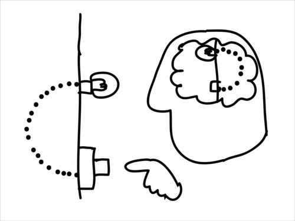
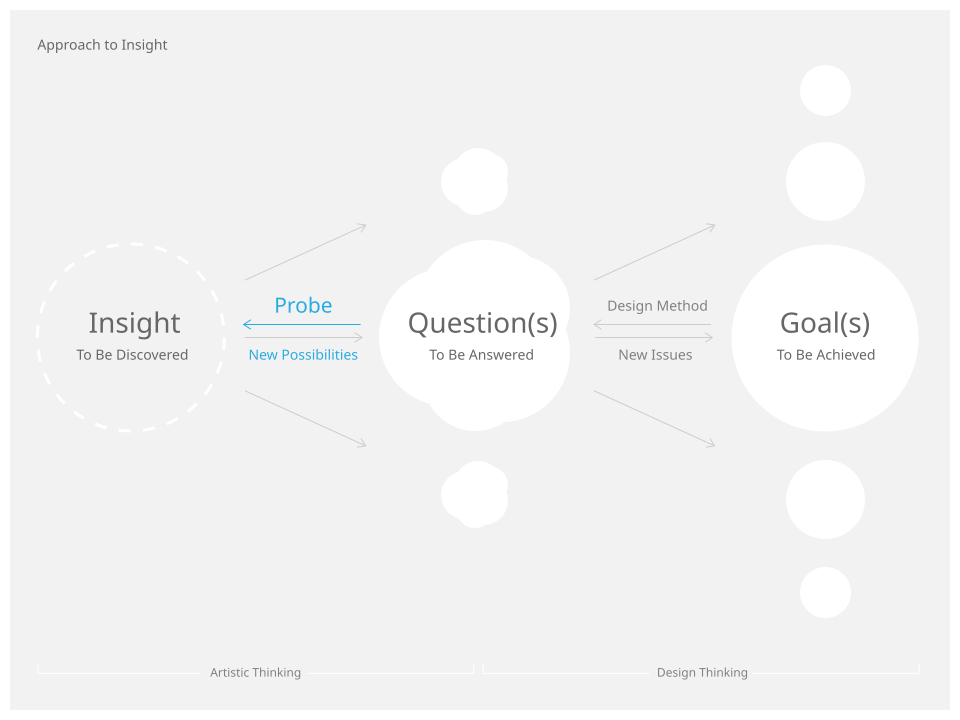
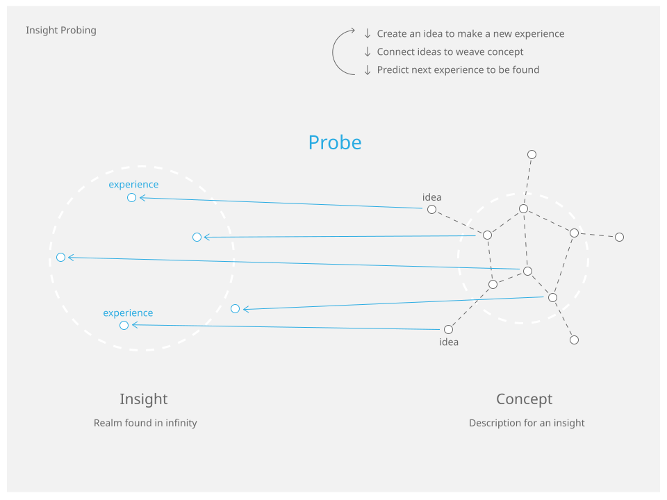
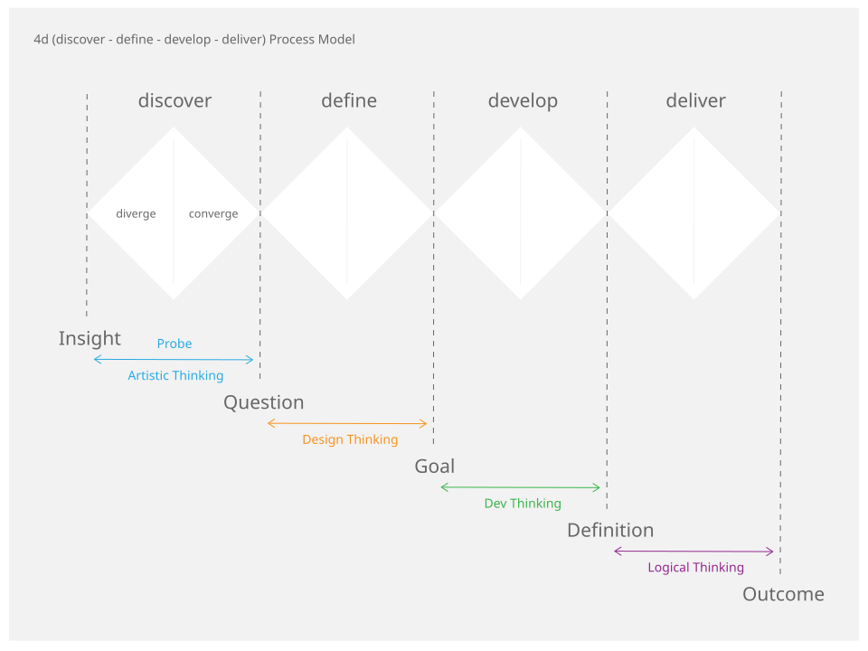

Approach to Insight by Circuit Lab.

Probe New Insights
未知の領域の探査 - Probe が私たちの使命です。
創造性は、より深く考え、知ろうとする努力の末、ふと新しい領域の存在を感じ取る瞬間から始まります。既知の世界の内側にまだ知られていない何かを見る素晴らしい能力 - Insight が人には備わっています。より多くの人々の、より多くの Insight が世界を変える最初の一歩を踏み出し、その可能性を現実にするためには、何が必要でしょうか。それは、手や道具を用いて、Insight が指し示す領域まで実際に行ってみることだと私たちは考えています。探査機 (Probe) が空へ出発するのは、知の宇宙と物理の宇宙との狭間で新しい経験をして、冒険者たちの前に持ち帰るためです。考え抜き、その結果を持って探検に出かけ、さらに考える…その繰り返しによって、予感にすぎない新しい可能性が、手触りのある、引き寄せるべき何かに変わっていくと考えています。
What We Do
私たちが新しい Insight を得たとき、次にするべきことは何でしょうか。
その価値を明確にし、共に進むべき人たちと共有するのは非常に難しい作業です。Insight が指し示す可能性はたいてい、形のない、意識によって見逃されがちな隙間のような存在です。本質的に扱いづらいものでもあり、だからこそ新しい価値が眠ったままになっています。
しかし順を追って取り組めば、それは次第に姿を表し、追い求めやすいものに変化させていくことができます。
Approach to Insight
私たちは Insight と向き合い、その説明としての Concept を明確にすることから始めます。Insight の示唆する領域を実践の対象として立ち上げるための第一歩で、これを Probe と呼んでいます。
Probe によって Concept を明確化することは、現状に対する違和感 - Question を見つけだすことを可能にします。Question から出発して具体的に達成すべき目標 - Goal を明確にすることは、各種のデザイン方法論が得意とするところです。はじめ捉えどころのない Insight を、Probe を行うことでさまざまな手法を用いて取り組むことが可能な対象に変化させます。

Insight Probing
Insight から Concept を導くプロセスは、Insight と関係する経験可能な点と、その経験についての名指し - Idea を検討し、複数の Idea をつなぎ合わせて一貫性のある説明 - Concept に加える作業の繰り返しです。
予感はあるものの、未だ不可知である領域に対して、見る、触るなどの経験可能な小さな点を積み上げる作業が、実践としての Probe の内容です。Probe によって、宇宙探査機がデータや資材を持ち帰るように、不可知だった Insight へ接近する足がかりを増やすことができます。Probe による経験を統合することで、新しい文脈 - Concept を書き起こし、未知の領域に対する説明を面的な広がりとして獲得していきます。

Probe in Practice
例えば、ある企業が Insight から出発して新しい製品を世に送り出すためには、Goal の明確化以降にも長大なプロセスが待っています。Goal に到達可能な計画を立て、実行に移すことそれ自体が大きな困難であり、そのためのさまざまな方法論が提案され、経験が語られています。
私たちは Insight から出発して実際に創造物がその価値を体現するまでの全過程を、4d Process Model としてモデル化しています。Insight から Goal に至る過程はその前半 (discover - define フェーズ) に相当し、その後のプロセスを可能にします。

創造プロセスの初期段階として Question の明確化を位置づけるアイディアは、 Ars Electronica の提案に大きな影響を受けています。Ars Electronica の Art Thinking Research は Desigin Thinking と Artistic Thinking を相互に補完し合う関係の中で描いています。4d Process Model の discover フェーズは Artistic Thinking 、define フェーズは Design Thinking によって可能になる実践と対応しています。
私たちは、さまざまなミッションに参加する機会ごとに、必要に応じて Probe を実践しつつ、プロセス全体を後押ししてきました。
-
Hyper ICC
- Hyper Museum Probe
- Question: 情報環境に存在するミュージアムはどのようなものか？
- https://hyper.ntticc.or.jp/
-
Project Sprint Quest
- Project Theory Probe
- Question: プロジェクト (人々が協力して新しいことに取り組むこと) はなぜどのように可能なのか？
- https://quest.projectsprint.org/
w/ 株式会社コパイロツト
-
NINGEN Societal Festival
- Social Innovation Probe
- Question: そこに暮らす人々のために社会の姿をどのように更新し続けることができるか？
- https://poniponi.or.jp/festival/identities/
これからも、Insight と出会い、次の一歩を踏み出すための手助けを必要としている人々と共に活動していきます。